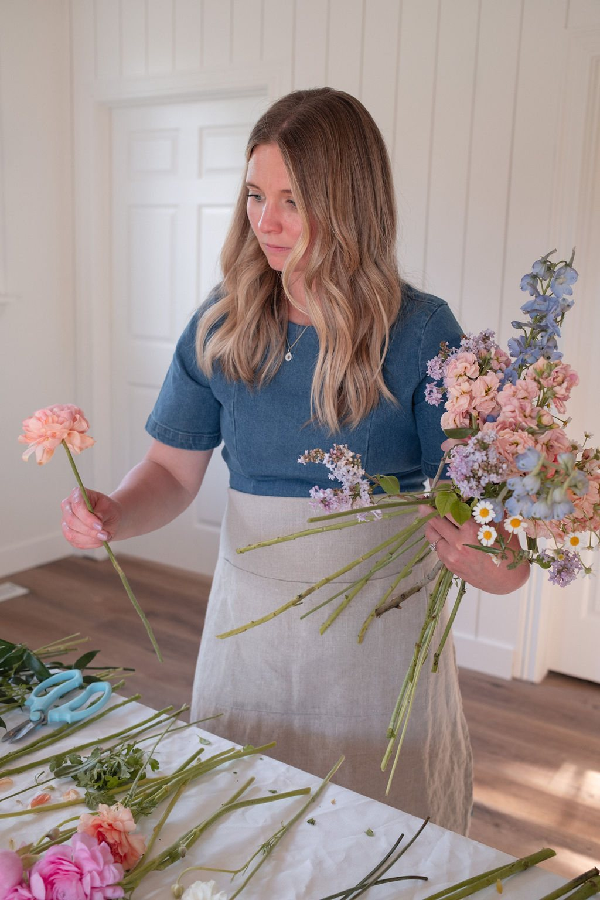

Meet the florist
Hi, I'm Alysha

The hands and heart behind Foundry Floral
I believe wedding flowers should feel like poetry: wild, romantic and a little unexpected. Foundry Floral began as a creative calling and grew into a continuation of three generations of floral artistry in my family.
My style is organic and unstructured, with seasonal textures and thoughtful details that feel authentically yours. When we work together, you get a collaborator who listens to your story and translates it into flowers.
Inquire today